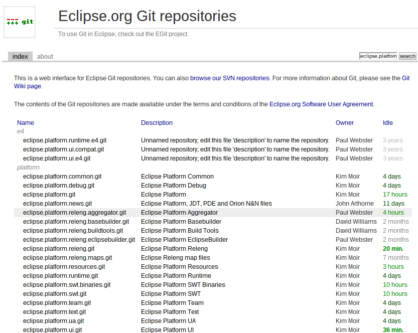
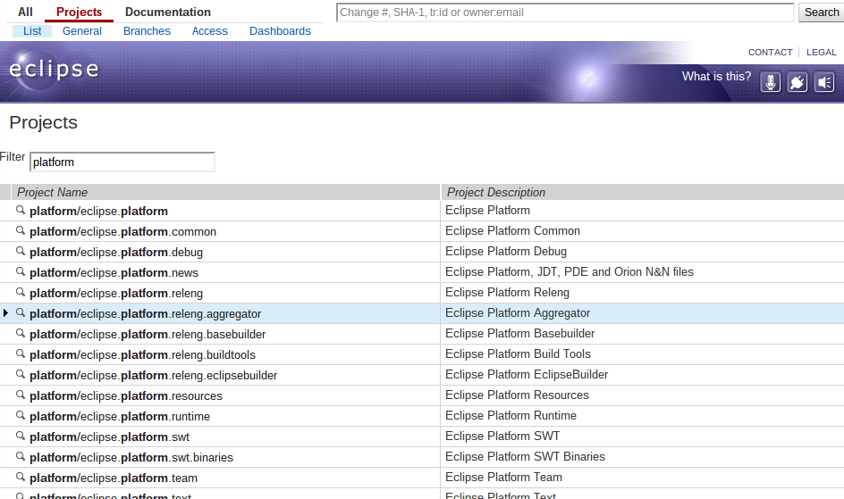
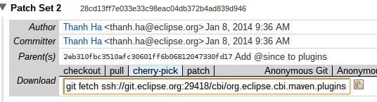

Agenda
- Requirements
- Where to get the code?
- Building Eclipse SDK
- Contributing to the Eclipse SDK
- Submitting a patch
Requirements
- Java SDK
- Apache Maven
- Git
cgit
https://git.eclipse.org/c/
- Browse codebase
- Look for README or CONTRIBUTING
cGit Preview
https://git.eclipse.org/c/

Gerrit
https://git.eclipse.org/r/
- Submit and Review patches
- Prefer Gerrit URLs
Gerrit Preview
https://git.eclipse.org/r/

Getting a copy of the code
Cloning code
git clone --recursive ssh://git.eclipse.org:29418/platform/eclipse.platform.releng.aggregator
# If you forgot --recursive
git submodule init
git submodule update
Building Eclipse SDK
mvn clean verify
# for some projects
mvn clean verify -f parent/pom.xml
Building a single component
mvn clean verify -P build-individual-bundles
# OR
mvn clean install -P build-individual-bundles
Platform Repository Overview
Submodules
Equinox
- rt.equinox.binaries
- rt.equinox.bundles
- rt.equinox.framework
- rt.equinox.p2
JDT
- eclipse.jdt
- eclipse.jdt.core
- eclipse.jdt.core.binaries
- eclipse.jdt.debug
- eclipse.jdt.ui
PDE
- eclipse.pde
- eclipse.pde.build
- eclipse.pde.ui
Platform
- eclipse.platform
- eclipse.platform.common
- eclipse.platform.debug
- eclipse.platform.resources
- eclipse.platform.runtime
- eclipse.platform.swt
- eclipse.platform.swt.binaries
- eclipse.platform.team
- eclipse.platform.text
- eclipse.platform.ua
- eclipse.platform.ui
SDK Output
eclipse.platform.releng.tychoeclipsebuilder
sdk/target/products
Updating your repositories
# Cleanup first
git clean -fdx
git checkout -f
git submodule foreach git clean -fdx
git submodule foreach git checkout -f
# Fetch new code
git pull
git submodule update
Contributing to the Eclipse SDK
Requirements
- eclipse.org account
- Signed CLA
Creating eclipse.org account
- Go to http://bugs.eclipse.org
- Click "Create a New Account"
- Enter your details
- Respond to confirmation email
Signing your CLA
- Go to http://projects.eclipse.org
- Click "Eclipse Login" (Top right)
- Enter your details
- Click "Continue"
- Click "Contributor License Agreement" tab
Note: CLA could take up to ~10 minutes to sync
Submitting a Patch to Gerrit
- _Always_ create a new branch for your work
- Only 1 commit per branch / patch
- Amend commit for changes to your patch
- Rebase before pushing
git fetch
git rebase origin/master
git push origin HEAD:refs/for/master
Pulling a Patch from Gerrit

Where to get help
cbi-dev mailing list
https://dev.eclipse.org/mailman/listinfo/cbi-dev